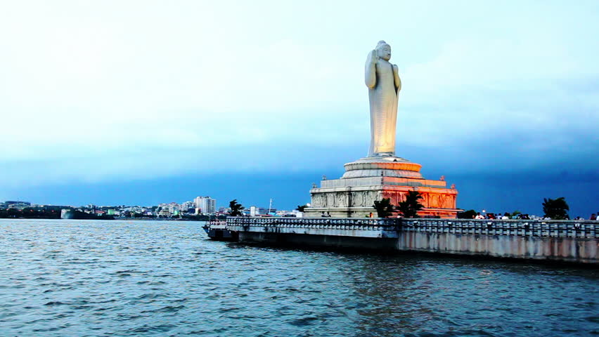

A place that is perfect for all the lovers of cinema and Bollywood! Set up by Ramoji Rao, the head of Ramoji group in 1991, Ramoji Film City is a spectacular getaway a little outside the city of Hyderabad. It is spread over 2500 acres and has been certified as the World's largest Film Studio Complex by the Guinness Book of World Records. Ramoji Film City can accommodate 20 film units at one go and has various shooting locations including London Street, Hollywood signage, Japanese gardens, airport, hospital, landscapes and buildings as well as laboratories. Being one of the most popular places to visit in Hyderabad, one can reach Ramoji Film City through a number of packaged tours and buses that leave regularly from the city. Ramoji Film City is a fun and diverse venue where you can indulge in a number of activities ranging from film city tours to adventure sports and toy train rides to a number of gardens. Smaller renditions of famous monuments in the country such as the Amer Palace are also present here. What's more, you can also stroll through a number of other sets and settings such as royal courts and other locations that have drawn inspiration from different architectures throughout the world. If you decide to visit this destination, after all, be sure to keep aside an entire day for this fun-filled location!

Renowned as Asia's largest artificial lake, Hussain Sagar Lake is one of the most popular tourist attractions located in Hyderabad. The lake itself was commissioned by Ibrahim Quli Qutub Shah in 1563 and is renowned for its monolith of Lord Buddha that stands right in its centre. Incidentally, this monolith structure is the tallest of its kind in the world! Hussain Sagar lake is also Called Tank Bund and lies on a tributary of River Musi. The attraction also has 3 km long dam wall and connects the twin cities of Hyderabad and Secunderabad. It is bordered by Indira Park, Sanjeevaiah Park, and Lumbini Park on 3 sides and is truly a relaxing and calming getaway from the city.
Although the Hussain Sagar Lake is popular for activities such as fish culture, water sports and boat rides, the major attraction of the lake is a monolithic Buddha statue situated right at the heart of the lake. The statue of Buddha was installed in the year 1992 and was inaugurated by His Holiness Dalai Lama himself. Standing at the Tank Bund, you can see the whole lake shimmering around you as the lights sparkle on the shore. Thus, the road is also known as the 'Necklace Road'. Owing to its unique heart-shaped outline, the Hussain Sagar Lake has been declared as the 'Heart of the World' by the United Nations World Tourism Organization (UNWTO).